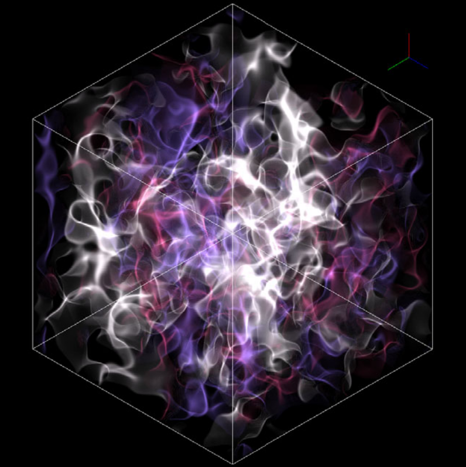

Neutrino Quantum Kinetics
In certain high energy astrophysics contexts, like core-collapse supernovae and neutron star mergers, neutrinos are radiated at such high densities they are capable of exhibiting collective behavior as a many-body quantum system. At the same time, neutrinos travel at nearly the speed of light and must be modeled using the techniques of radiation transport, this is the kinetics part.
Neutrino Quantum Kinetics Influences Heavy Element Creation, But Is Challenging To Predict!
It so happens that neutron star mergers, and to a lesser extent, core collapse supernovae, are understood by astrophysicists to produce the majority of all elements heavier than iron on the periodic table, such as gold. Since neutrinos interact with neutrons and protons, neutrinos influence the likelihood of various nucleosynthesis pathways for creating all these heavy elements.
But how can we make accurate estimations of which astrophysics events produced various quantities of elements? Well, we observe radiation spectra from these events, then we match these observed spectra with detailed computational models of the explosion and the radiation it produces to determine the starting conditions for the explosion.
But computing the influence of neutrinos is fairly difficult, we have to solve a radiation transport problem in six dimensions (three space plus two angular dimensions plus time). Then as if radiation transport weren’t difficult enough, we need to solve a many-body quantum mechanics problem to evolve the neutrino flavor states.
Neutrino Quantum Flavor Instabilities Play A Critical Role, Requiring Specialized Code
If the quantum mechanics of neutrinos is hard to simulate, we might naturally ask what makes the neutrino quantum flavor state so important in the first place.
Getting the neutrino quantum state right is important because under certain conditions, theorists have found neutrinos can evolve fast flavor instabilities (FFI). Under FFI conditions, the overall neutrino flavor state very rapidly destabilizes before approaching a completely different equilibrium state over longer timescales.
The problem is that these FFI events can occur in volumes of space that would fit into the palm of one’s hand, over timescales measured in just a few nanoseconds. This is far faster than explosion simulations can possibly capture, so we need to write a specialized simulation code just for neutrino quantum kinetics.
We can then predict what conditions could lead to FFI and the long term outcomes to provide effective models for larger, more complete simulations of the entire explosion event.
Predicting Neutrino Flavor in Astrophysics Requires Writing Code That Combines Radiation Transport And Quantum Mechanics
We can start by considering what we need to solve the kinetic, transport aspect of neutrino evolution.
Sometimes transport problems are best solved with Lagrangian techniques, which represent the solution as a collection of particles.
Lagrangian techniques are often an efficient choice for simulating transport because a solution made up of uniquely moving particles is one way to reduce certain artificial diffusion errors in Eulerian transport models based on a fixed spatial grid.
Lagrangian particles may interact with each other and with matter or fields extending throughout the simulation domain.
Why are Lagrangian methods important? Well, they are exactly what we needed for neutrino quantum kinetics.
Neutrinos are nearly massless and so move at nearly the speed of light. They carry no electrical charge, but they do carry a quantum state called flavor in particle physics.
Neutrinos arise in large numbers from core collapse supernovae and neutron star merger events in high-energy astrophysics. In such cases, we naturally model neutrinos as radiation we must transport, so we chose a Lagrangian approach.
Each Lagrangian particle thus represents a number of physical neutrinos. These physical neutrinos have an average flavor state we represent with a \(3 \times 3\) Hermitian matrix associated with the Lagrangian particle.
Thus, not only must our code transport Lagrangian particles, we must also evolve the flavor state matrix associated with each particle.
I developed a framework based on AMReX for evolving equations associated with Lagrangian particles using global Runge-Kutta time integration. We generated the C++ code each particle must integrate to evolve its complex-valued flavor state matrix using the Sympy package for symbolic mathematics.
When we consider the dynamics of evolving the neutrino flavor state due to neutrino-neutrino and neutrino-matter interactions, the mean-field approximation seemed a natural choice for solving the complex neutrino quantum kinetics equations.
We implemented the mean-field approximation using a background spatial grid where we averaged the surrounding particle quantum flavor states. In turn, we interpolated back from the spatial grid to the particle locations in each spatial cell to calculate the time derivative for the particle flavor state matrix. This technique is called a Particle-In-Cell (PIC) Method.
Our code generation approach with Runge-Kutta integration for the Particle-In-Cell Method is the framework of the Emu simulation code I developed with Sherwood Richers to solve the six-dimensional neutrino quantum kinetics problem.
We Created Emu: A Six-Dimensional, Three-Flavor Code To Solve Neutrino Quantum Kinetics
Emu is an open-source code, freely available on the Emu GitHub.
We also openly published the Emu inputs files anyone could use to reproduce our published work.
In summary, I worked with Sherwood Richers to create Emu, a new simulation code based on the particle-in-cell technique to solve neutrino quantum kinetics in the mean field approximation.
Emu evolves the neutrino radiation field using Lagrangian particles traveling atop an underlying spatial mesh that contains the mean field quantum many-body state as well as the nuclear matter background.
We Validated Emu By Simulating Neutrino Fast Flavor Instabilities In One Spatial Dimension
We started with one-dimension in space, two dimensions in angle, and three neutrino flavors to evaluate the dynamics of FFI under conditions where other simulation codes provided a means of comparison. We published this work in our first Emu paper.
For details, see Richers et al. (2021a).
Emu Enables Us To Simulate Neutrino Fast Flavor Instabilities In Three Spatial Dimensions
After validating our method and publishing our numerical technique in our first paper, we moved on to the exciting challenge of fully three-dimensional simulations.
This time, we wanted to capture all three dimensions of the volume of space neutrinos traversed while undergoing fast flavor instability. We also wanted to simulate all angular directions in which neutrinos could travel over the full instability timescale.
We were able to easily discretize these dimensions because we used Lagrangian particles to represent groups of neutrinos located anywhere in our three-dimensional simulation domain and moving in any of two angular directions covering the unit sphere.
We then evolved the neutrinos forward in time using Runge-Kutta integration, for a total of 6 dimensions of space, angle, and time.
Our Emu code enabled us to simulate the neutrino fast flavor instability in all six dimensions with all three neutrino flavor states.
We repeated the FFI conditions in our earlier one-dimensional paper, again with all three neutrino flavors and published our work in a follow-up paper.

For details, see Richers et al. (2021b).